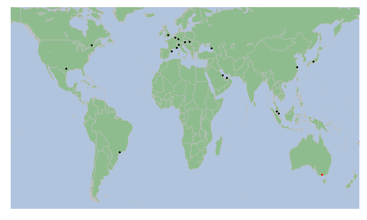

- Fone is a simple shiny application that presents circuit location on a world map and race results in two separate tabs
- Receives two user inputs: Year and circuit
rrunner
Developing Data Products

| pos | no | driver | constructor | laps | grid | status | points | |
|---|---|---|---|---|---|---|---|---|
| 1 | 1 | 6 | Nico Rosberg | Mercedes | 57 | 3 | Finished | 25 |
| 2 | 2 | 20 | Kevin Magnussen | McLaren | 57 | 4 | Finished | 18 |
| 3 | 3 | 22 | Jenson Button | McLaren | 57 | 10 | Finished | 15 |